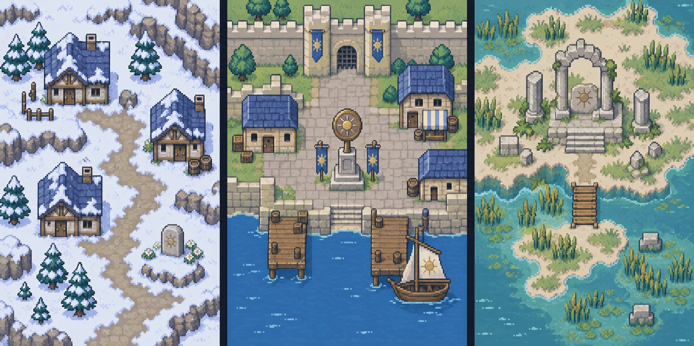
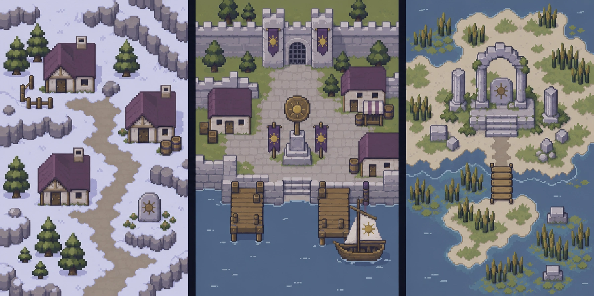
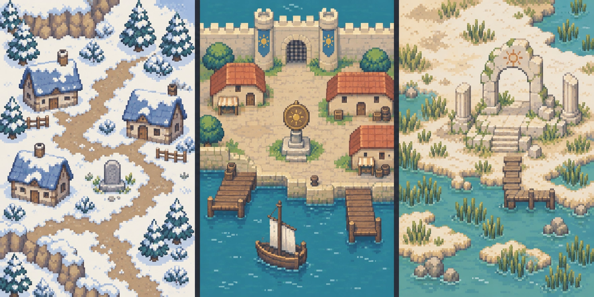

A · 清爽掌机
蓝灰屋顶、清澈海面，色块层次较清楚，偏经典掌机战棋的冒险感。

按更接近《火焰纹章》的经典像素方向制作，使用柔和色块和简洁纹理。三张都表现同一组剧情地点，便于比较。
蓝灰屋顶、清澈海面，色块层次较清楚，偏经典掌机战棋的冒险感。

灰紫、橄榄与旧铜，纹理更少，偏沉静的旧世界、失散与复仇氛围。

奶油色石墙、陶红屋顶、柔和青绿水面，形状更圆润，偏温暖的古典幻想感。

这一轮用于确认画风。选定 A、B 或 C 后，再制作正式世界地图瓦片；届时交付可拼接的边缘、转角、连接块和地形定义。